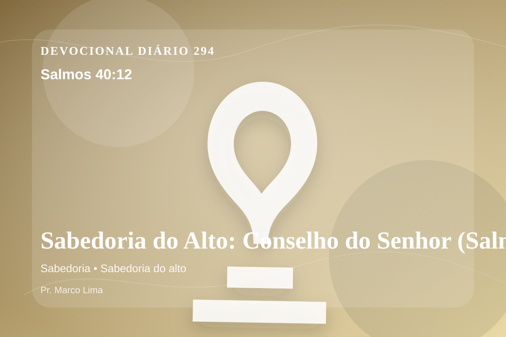

Sabedoria do Alto: Conselho do Senhor (Salmos 40:12)
Porque inúmeros males me cercaram; minhas maldades me prenderam, e eu não pude as ver; elas são muito mais do que os cabelos de minha cabeça, e meu coração me desamparou.
Pensamento
Desta vez, leia o texto pensando no que precisa ser entregue antes de qualquer mudança externa. A leitura de hoje convida você a diminuir o ruído, abrir a Bíblia com humildade e deixar que Salmos 40:12 fale com profundidade.
Salmos 40:12 chama o coração a ouvir Deus com reverência e responder com fé prática. A Palavra não foi dada para enfeitar pensamentos religiosos, mas para conduzir pessoas reais ao Senhor.
O tema de sabedoria precisa ser recebido com simplicidade e seriedade. Quando essa verdade encontra resistência dentro de nós, é justamente ali que o Espírito deseja trabalhar. A sabedoria bíblica não é apenas informação correta, mas discernimento para viver diante de Deus. Ela une temor do Senhor, humildade e obediência prática nas decisões diárias.
A Palavra convida você a abandonar desculpas. Onde houver pecado, confesse; onde houver incredulidade, peça fé; onde houver cansaço, volte-se para Cristo.
Arrependimento não é apenas sentir peso na consciência; é voltar-se para Deus, abandonar o caminho que entristece o Senhor e confiar que a graça de Cristo é suficiente para perdoar e transformar.
Este é o evangelho que sustenta toda aplicação: Jesus Cristo morreu pelos pecadores, ressuscitou em vitória e chama cada pessoa a responder com fé, arrependimento e uma vida rendida ao Seu senhorio.
Deus não chama você para uma religiosidade sem vida, mas para reconciliação com Ele por meio de Cristo. Essa reconciliação começa com fé humilde e arrependimento sincero.
Se o texto trouxe consolo, adore. Se trouxe confronto, arrependa-se. Se trouxe direção, obedeça. Em tudo, volte os olhos para Cristo.
Para Praticar Hoje
- Leia Salmos 40:12 lentamente e destaque uma palavra ou expressão central do texto.
- Confesse a Deus um pecado, resistência ou frieza espiritual que esta Palavra revelou.
- Declare sua fé em Jesus Cristo e pratique hoje uma atitude concreta de arrependimento e obediência.
Oração
Pai, eu não quero apenas informação, mas discernimento. Salmos 40:12 revela que o temor do Senhor é o começo da sabedoria. Dá-me discernimento para separar o que é de Ti. Que eu caminhe contigo neste dia.
{kind=link}